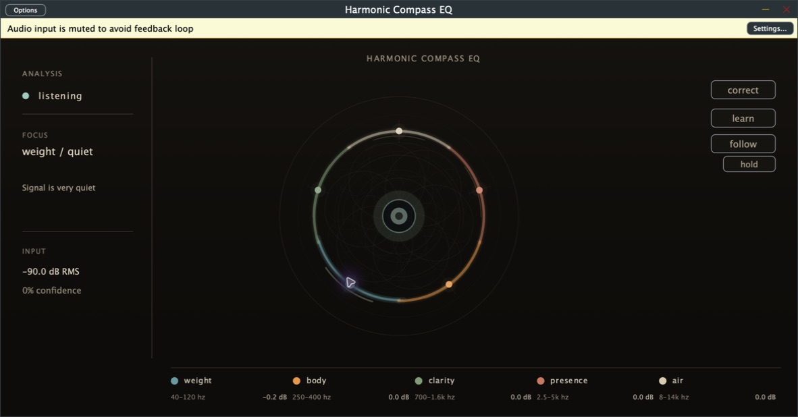

dynamic EQ for macOS
Harmonic
Compass
Dynamic EQ for finding balance in a mix.
- price
- $8 once
- product
- EQ 1.1.2
- formats
- AU, VST3, app
real-time learning in Cubase
Watch the compass work.
Learn settles into a correction. Follow keeps adapting as the mix changes.
the actual plug-in
A mix balance map, not another parametric maze.
Harmonic Compass EQ groups the spectrum into weight, body, clarity, presence, and air. Use Learn for a restrained starting point, then correct by feel.

mix by balance
Hear the problem. Move the point.
Drag directly on the compass to rebalance lows, low mids, mids, high mids, and highs. Learn listens to the track, then suggests a restrained correction you can keep, adjust, or ignore.
- Auto
- General material and buses
- Bass
- Low-end weight and definition
- Guitar
- Body, bite, and harshness
one-time purchase
Your mix does not need another subscription.
Get Harmonic Compass EQ 1.1.2 for macOS. The signed and notarized installer includes Audio Unit, VST3, and the standalone app. Your license is tied to the email used at checkout so the installer is not posted as a public download.
One payment. License delivered by email after checkout. AU, VST3, and standalone app for macOS.
support
Something feel off?
Include your DAW, macOS version, what you used it on, and what happened.
Short notes are useful. Long essays are also allowed, unfortunately.